Votre intérieur, refait avant d’y toucher.

 Avant
Après · Japandi
Avant
Après · Japandi
Photographiez votre pièce, votre façade ou votre jardin. Deco Render vous les montre dans un autre style, en gardant la structure réelle des lieux : les murs, les ouvertures, les volumes.
Touchez ce que vous refaites. Maintenez ce que vous gardez.
Votre photo est découpée en zones directement sur l’iPhone : canapé, sol, murs, toiture, pelouse. Vous désignez, la consigne s’écrit toute seule.
Toujours en place : Fenêtres
Toujours en place : Portes
On refait le canapé et le sol, en japandi. On garde la table.
- Touchez : on refait.
- Maintenez : on garde.
- Fenêtres et portes restent toujours en place.
Au clavier, Entrée ou Espace fait passer un élément de « à refaire » à « gardé », puis le libère.
Les zones sont celles que l’app calcule sur sa photo d’exemple. Essayez.
Le rendu arrive. Comparez, ajustez, montrez.
Choisissez un style ou une simple couleur de mur, lancez le rendu, puis jugez sur pièce.
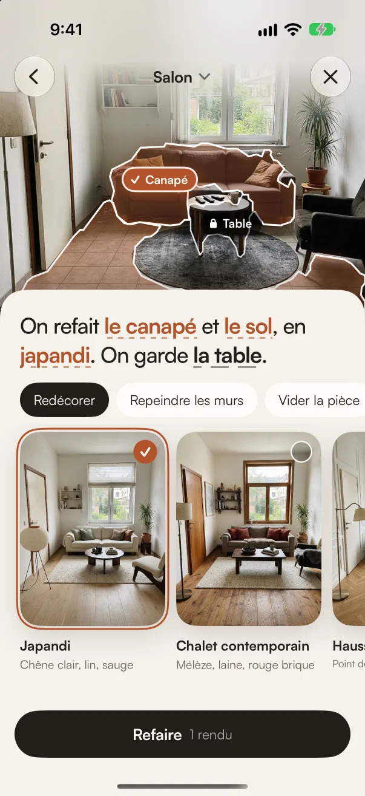
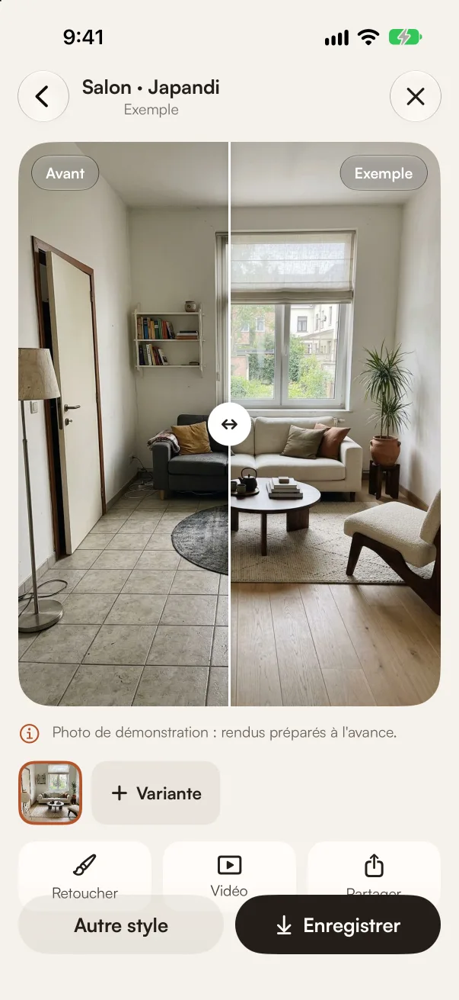
- Avant, après
- Glissez d’un côté à l’autre pour comparer le rendu à votre photo.
- Variantes
- Demandez une autre proposition : elle s’ajoute aux précédentes.
- Retouche
- Changez un seul élément, autre modèle ou autre couleur. Le reste ne bouge pas.
- Vidéo avant/après
- Un montage vertical 9:16 créé sur l’iPhone, prêt à partager.
- Export
- Enregistrez l’image dans Photos ou partagez-la.
Trois espaces. Le même lieu, autrement.
Chaque série part d’une seule photo. La pièce, la maison et le terrain restent les mêmes : seul le style change.
Intérieur
Salon, chambre, cuisine, salle de bain, bureau, salle à manger, entrée.
- Redécorer
- Repeindre les murs
- Vider la pièce
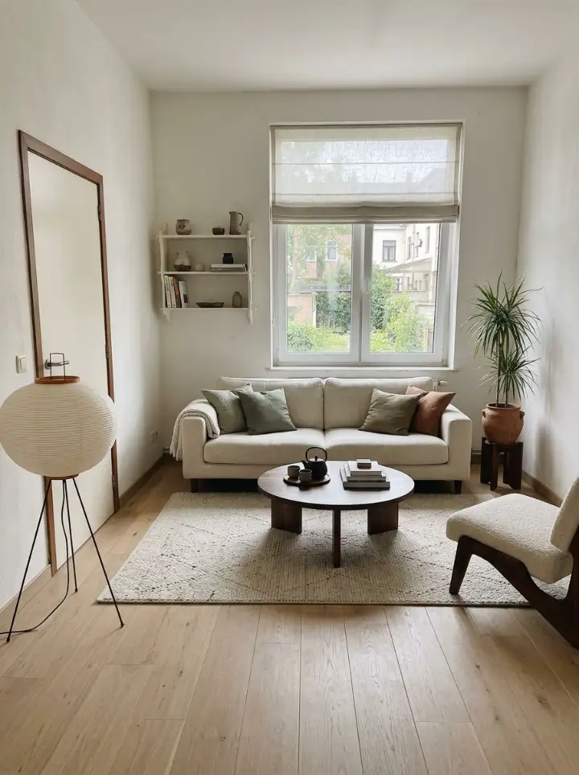
 Avant
AvantJapandiChêne clair, lin, sauge 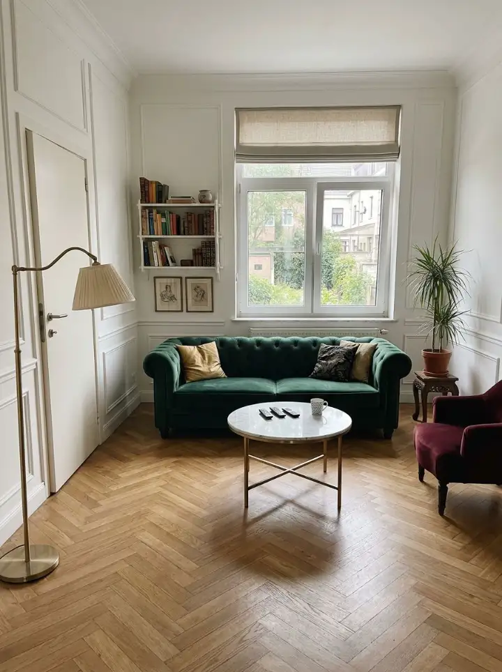
HaussmannienPoint de Hongrie, velours, laiton 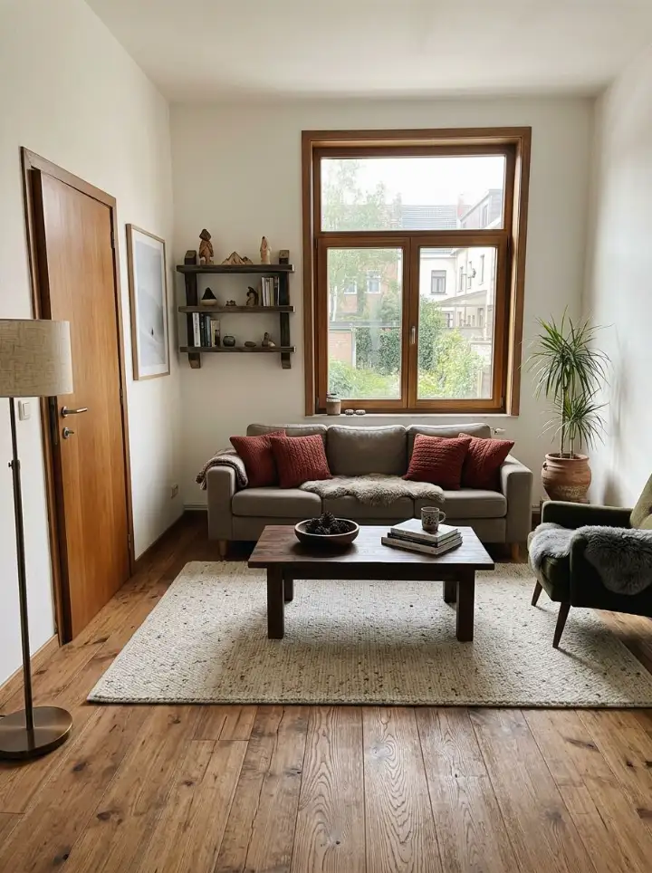
Chalet contemporainMélèze, laine, rouge brique 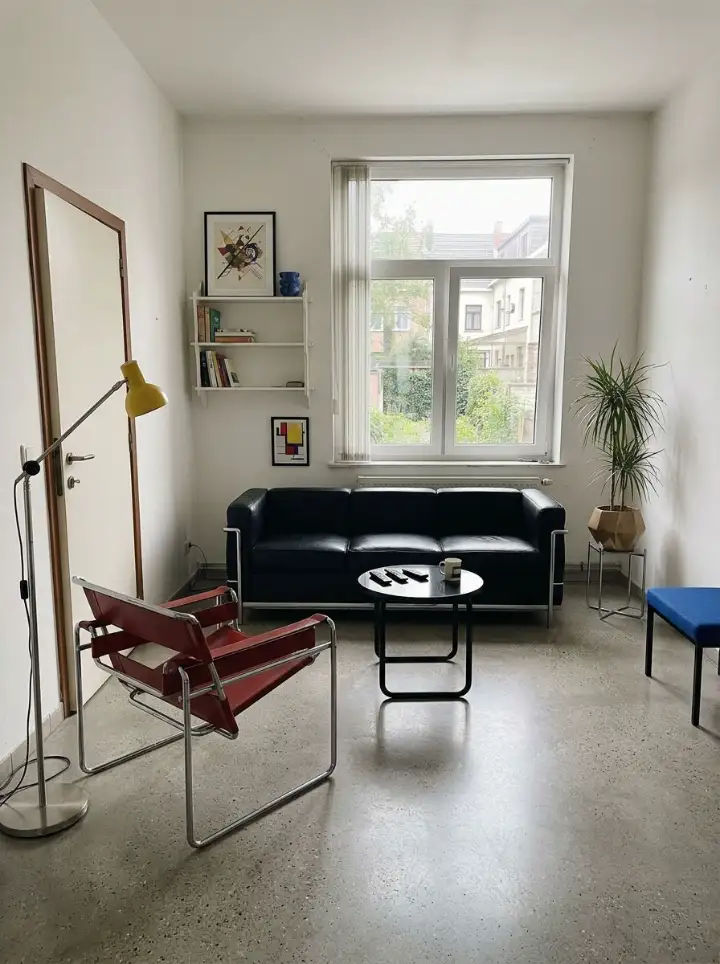
BauhausBéton ciré, acier, couleurs franches 
Ferme vaudoiseChaux, terre cuite, vieux bois
Façade
Maison, immeuble, chalet, ferme.
- Rénover la façade
- Repeindre la façade
- Végétaliser
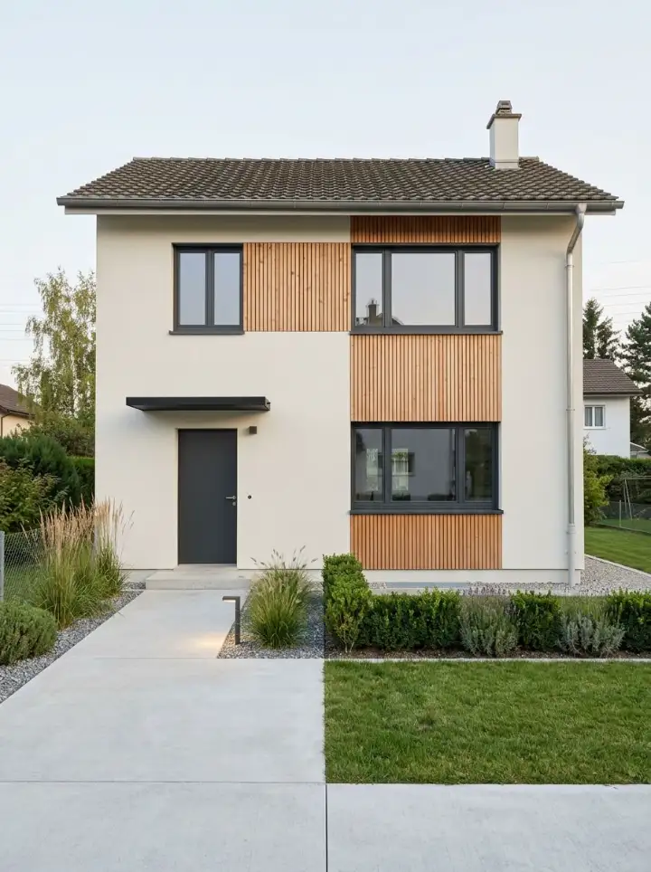
 Avant
AvantContemporainEnduit clair, mélèze, alu anthracite 
Chalet alpinÉpicéa, volets bois, géraniums 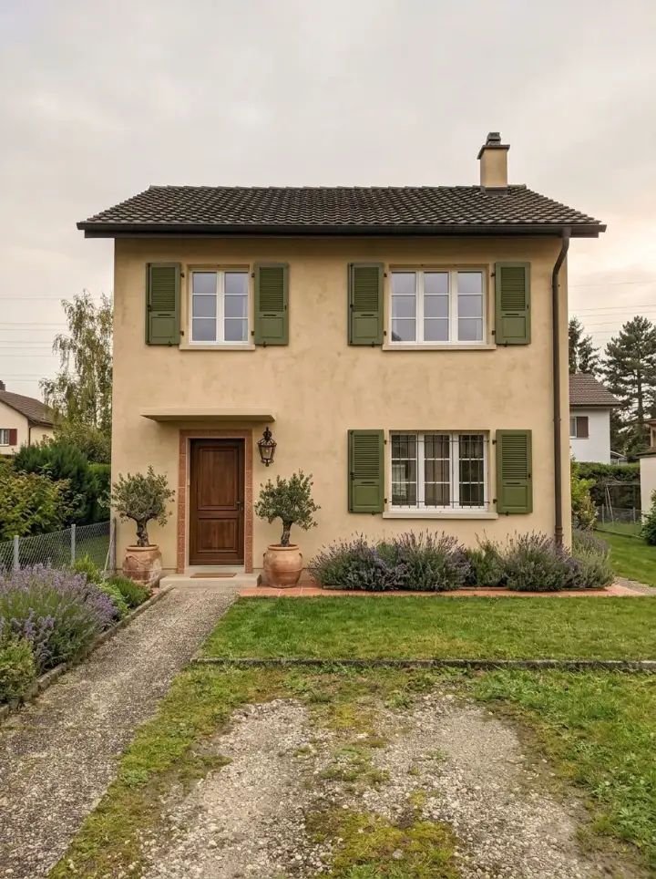
MéditerranéenChaux sable, volets olive, oliviers 
ScandinaveBardage noir, cadres blancs 
Pierre et chênePierre naturelle, porte en chêne
Jardin
Jardin, terrasse, balcon, cour.
- Aménager
- Repartir de zéro
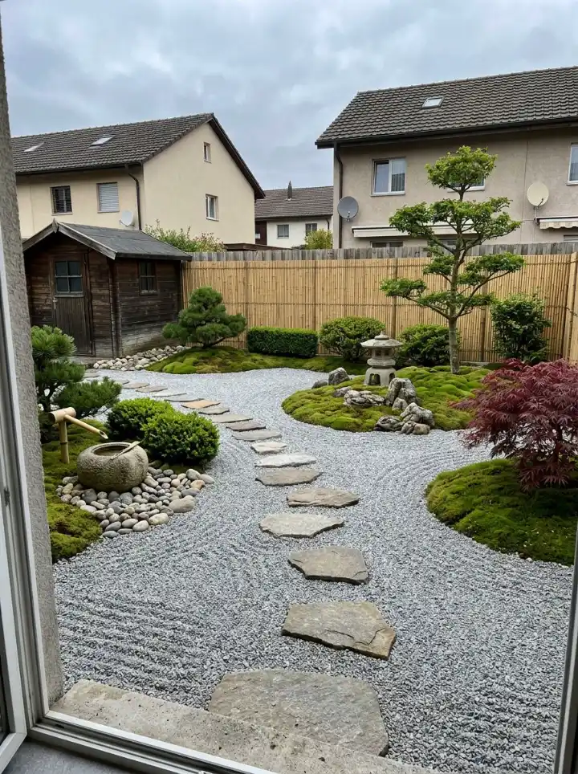
 Avant
AvantJaponaisGravier, mousse, érable 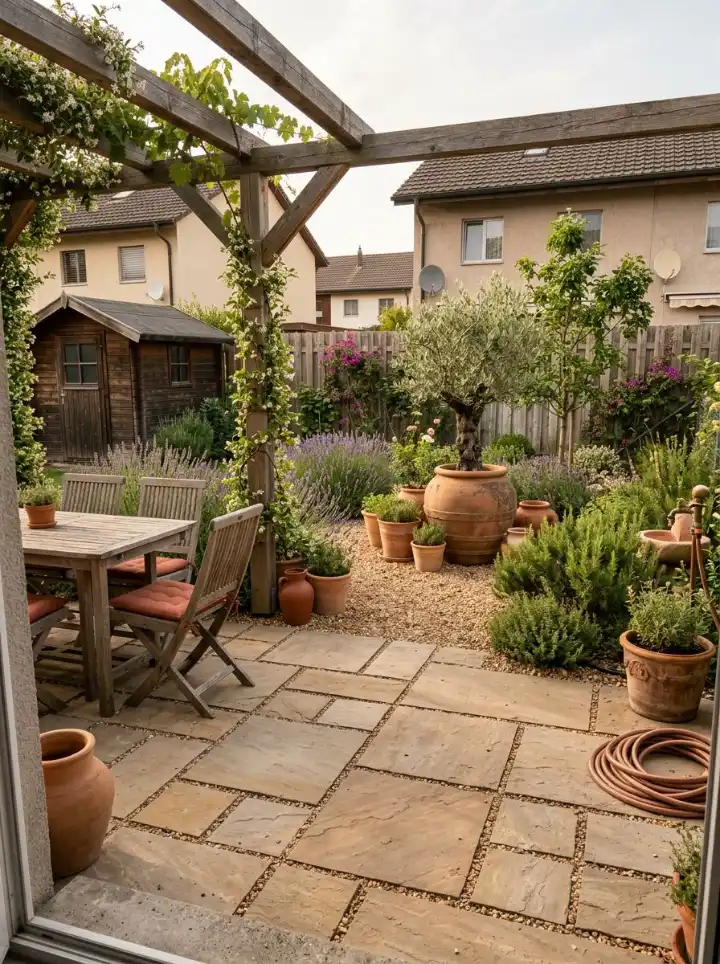
MéditerranéenOlivier, lavande, pergola 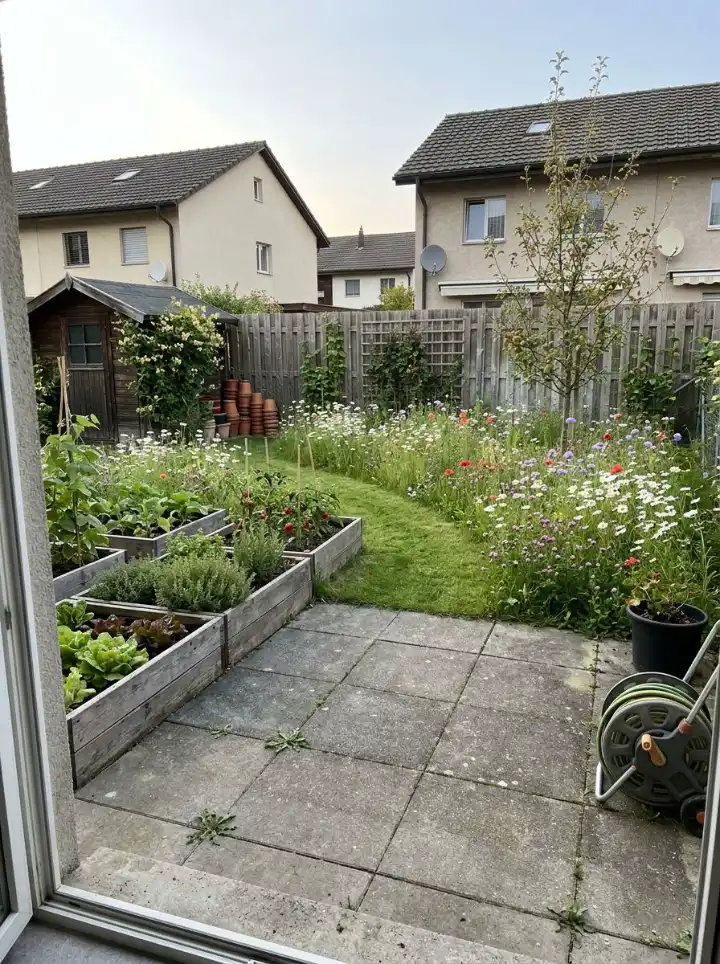
Potager et prairieBacs en bois, fleurs sauvages 
ContemporainDalles claires, deck, graminées 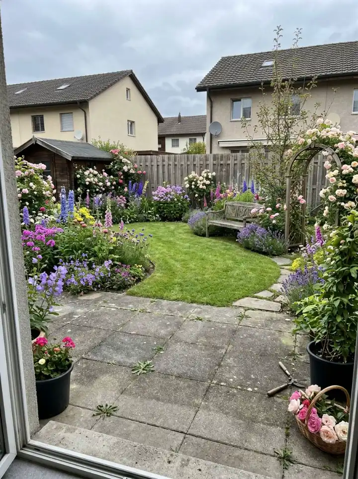
Cottage anglaisMassifs fleuris, roses, banc
Scannez la pièce. Repartez avec son plan.
Avec le capteur LiDAR de l’iPhone, Deco Render mesure les murs, les portes, les fenêtres et les meubles en une minute environ. Tout est calculé sur l’appareil.
- Plan cotéLes murs, les ouvertures et leurs dimensions, vus du dessus.
- Maquette 3DLa pièce en volume, à tourner du bout du doigt.
- QuantitésSurface au sol, peinture des murs, plinthes, hauteur sous plafond.
- Budget indicatifUne fourchette calculée à partir des quantités et de prix d’exemple, à faire confirmer par un artisan.
- Dossier PDFPlan, quantités, budget et comparaison avant/après, dans un seul document à envoyer.
Le scan 3D demande un iPhone équipé du LiDAR (modèles Pro, à partir de l’iPhone 12 Pro) et concerne l’intérieur. Sans LiDAR, une pièce d’exemple déjà mesurée permet de parcourir le plan et le budget.
Visite vidéo
Filmez, c’est refait. La fonction est en préparation : elle n’est pas encore disponible dans l’app.
3 rendus offerts, puis Pro.
Deco Render Pro est un abonnement annuel ou hebdomadaire. Pas d’essai gratuit qui se transforme en abonnement.
Les abonnements se renouvellent automatiquement et se gèrent dans les réglages de votre compte Apple, où vous pouvez les résilier à tout moment. Les prix sont affichés dans l’app avant tout achat. Le détail figure dans les conditions d’utilisation.
Ce qui quitte votre iPhone : la photo à transformer et sa consigne.
Pas de compte à créer, pas de publicité, pas de traceur.
Reste sur votre iPhone
- La lecture de la photo
- Le découpage en zones et la reconnaissance du type de pièce sont faits par des modèles embarqués. Rien n’est envoyé pour cette étape.
- Le scan 3D
- Les mesures, le plan, les quantités et le budget sont calculés sur l’appareil.
- Vos projets
- Vos photos, vos rendus et vos plans restent dans l’app, sur votre appareil. Supprimer l’app les efface.
Quitte votre iPhone
- Pour un rendu
- L’image à transformer et la consigne de style partent vers le prestataire de génération d’images, uniquement pour produire l’image.
- Pour un achat
- L’abonnement se règle auprès d’Apple. Deco Render ne voit aucune donnée de paiement.

Voyez-le avant de le faire.
Bientôt sur l’App StorePour iPhone, iOS 17 ou version ultérieure.
 Avant
Avant